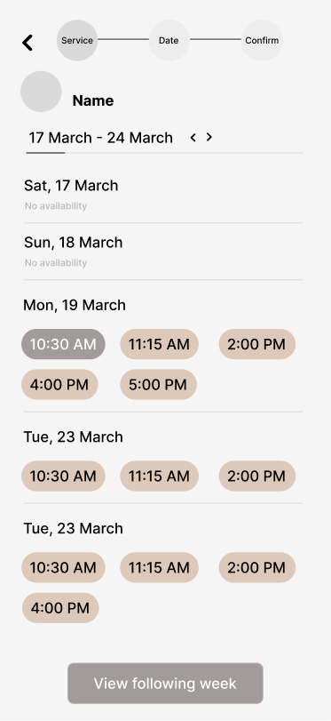
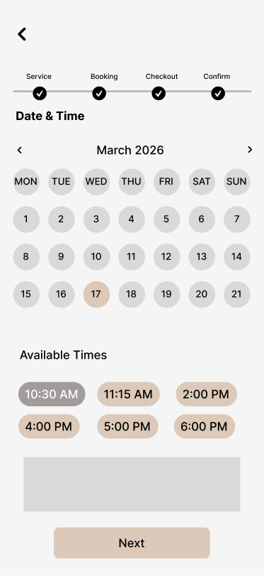
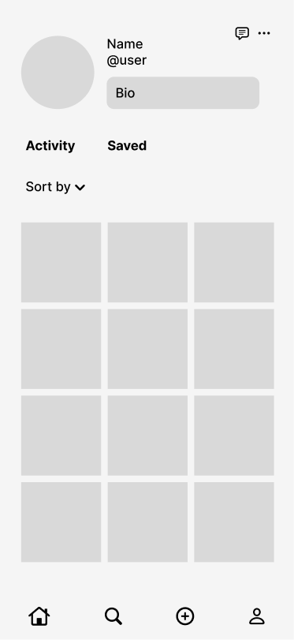
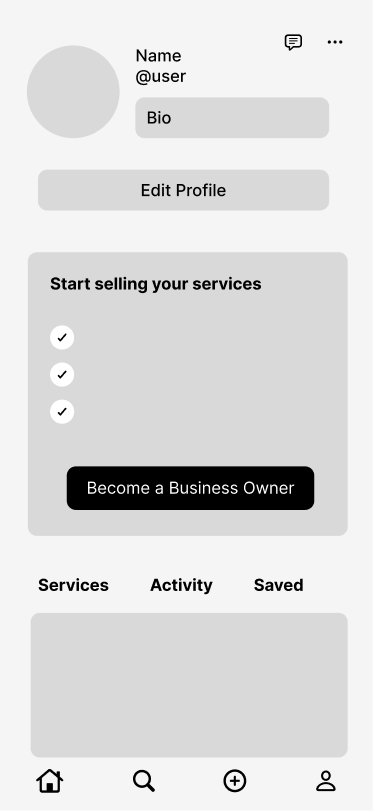

Context
Student businesses are everywhere but finding them isn’t easy
Many college students run service-based side businesses, while others seek affordable, convenient services within their campus community. However, these businesses are often scattered across social media, group chats, and word of mouth, making them difficult to discover. As a result, student entrepreneurs struggle to reach customers, and students often overlook services already available on campus.
Problem
How might we make student-run businesses easier to discover and trust on campus?
Student-run businesses are often promoted through scattered social media posts, group chats, and word of mouth. This makes it difficult for students to find reliable services, compare their options, and feel confident booking, while student entrepreneurs struggle to reach customers beyond their existing networks.
Easier Discovery
Find student-run services in one centralized place
Affordable & Nearby
Access convenient options that fit student budgets and campus life
Support Your Peers
Help fellow students grow their businesses while building community
User Research
After 5 + user interviews across students of different majors...
Students struggle to stay focused when studying because they can’t track how they spend their time. Without tools that provide feedback or structure, many students get distracted and lose momentum, which leads to frustration and burnout.
Market Analysis
What’s already available?
To better understand the existing market, we analyzed Etsy and Cornell CampusGroups. Etsy shows how a large marketplace can help independent sellers reach customers, while CampusGroups demonstrates how students already discover campus organizations, events, and opportunities.
By comparing both platforms, we identified what they do well, where they fall short, and how our product could better support student-run service businesses.
Large audience and strong discovery tools
High fees and limited campus relevance
Trusted and familiar to students
Poor service discovery and comparison tools
Ideation
From ideas to early sketches
We sketched our initial ideas on paper to explore how the main features could work, including onboarding, service discovery, business profiles, search, and messaging.
Design Iterations
Figuring out what works and what doesn’t
We sketched our initial ideas on paper to explore how the main features could work, including onboarding, service discovery, business profiles, search, and messaging.
Bookings Page
We explored two ways for users to view available appointment times: a chronological list and a monthly calendar. Each option offers a different balance between quick browsing and schedule visibility.

Clearly displays available time slots by day
Requires extra steps to view later dates

Provides a clear overview of the full month
Users must select each date to see available times
Profile Page
We explored two profile page directions to better support different types of users. The first focuses on business owners showcasing their services, while the second introduces an empty state for non-business users and encourages them to start offering services.

Lets business owners clearly showcase their services
Does not support users who are not business owners

Accounts for non-business users with a clear empty state
Adds an extra prompt that may feel unnecessary for users not interested in selling